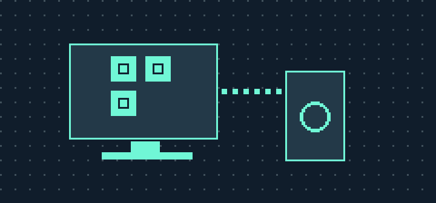
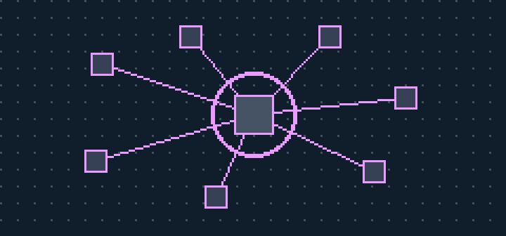
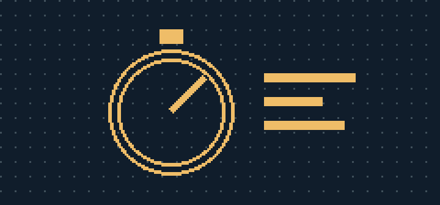
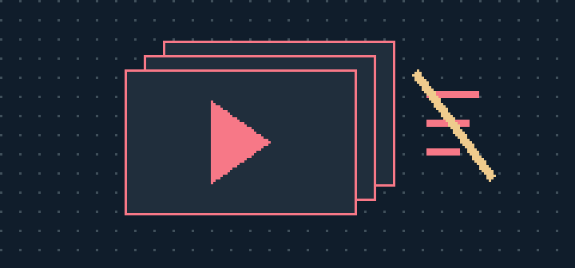
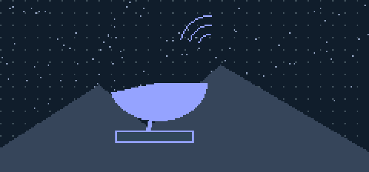
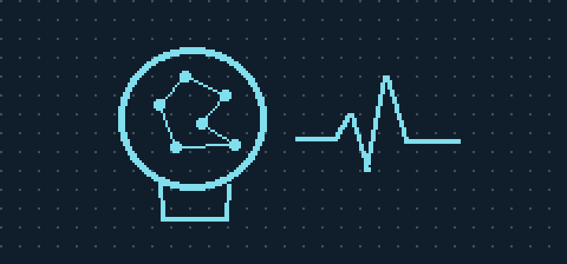
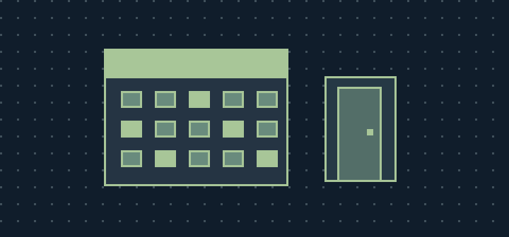
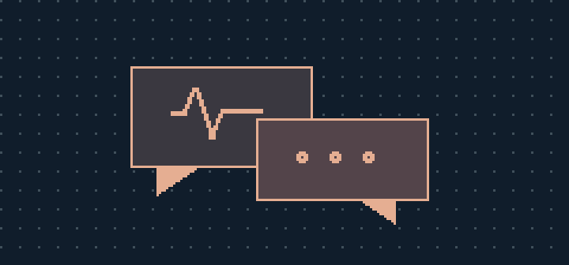

What shapes cognition?
In a team study of 80,000 records, I examined how sleep and stress relate to reaction time and memory.
Source · Hacktivators, DSCI 2410 final project. Underlying dataset
I build web tools for everyday problems and study the patterns people leave in data.
Explore my workStart in my bedroom. Pick a door, meet my teams and bring your discoveries to the interview.
In a team study of 80,000 records, I examined how sleep and stress relate to reaction time and memory.
Source · Hacktivators, DSCI 2410 final project. Underlying dataset
I’m interested in computer vision, robot perception and neuro-inspired AI. My other research interests include trustworthy AI and human-centered technology.

Fly-QR Full-stack developmentSigning into a personal messaging account on a library computer just to print a file felt unnecessary. I built a QR-linked room that connects two browsers without an account.
Files travel directly over WebRTC when possible. A Socket.IO relay handles connections where a direct path fails.
REACT / NODE.JS / WEBRTC / REDIS
VentureLab Agent systemsAt the MADS × CSCE AI Hackathon, I co-developed a ten-agent system that takes a founder through six phases of venture development. Local language models support market research, validation and prototyping. We checked workflows and founder approvals with 692 passing Python tests and 37 browser tests.
PYTHON / FASTAPI / OLLAMA / DOCKER
Lapwise Productivity softwareI wanted a timer that could follow a whole study session. In Lapwise, checking off a task records its own lap. Switching tasks assigns the elapsed time to the task I was leaving, so a minute of work only gets counted once.
SESSION TIMING / TASK TRACKING
YouTube Mix Blocker Browser extensionOpening a song sometimes pulls an entire radio queue along with it. This extension removes the automatically attached Mix while preserving the selected video, timestamp and ordinary playlists. It runs in the browser.

The Observer Paradox C++ game prototypeIn this turn-based class project, a research team in Egypt’s Western Desert investigates mysterious transmissions. Undoing a turn restores the simulation, but the Observer’s log remembers what happened.
C++17 / STATE MANAGEMENT / INTERACTIVE FICTION
Cognitive performance Statistical analysisI led a team investigating how sleep and stress relate to reaction time and memory across 80,000 records. We used ANOVA and regression to compare outcomes and examine interactions between exercise and screen time.
PYTHON / PANDAS / REGRESSION
Study room booking Campus softwareAt the American University in Cairo, I turned observed reservation problems into requirements for a digital study room booking system. I secured university approval and completed the solution as a volunteer developer in summer 2026.
I cleaned 65,000 records in R and used dplyr and ggplot2 to investigate how social media habits relate to productivity.

SOUTRA Web designI contributed to the design and development of a reproductive health information platform for Tunisia and helped pitch it at the final stage of Camp4SRH.
UNFPA · Camp4SRH co-organizerBefore I studied data in Cairo, I was gathering it in Kasserine. My first research partners were other young people asking what climate change meant for our town.
In Kasserine, I was one of 12 young P.A.R. researchers, alongside Dhiya, Ranya and nine other teammates. With UNICEF Tunisia and Réseau Enfants de la Terre, I worked alongside more than 240 young people to document how climate change affected health, education and livelihoods. I helped lead workshops on climate and renewable energy. Then we took the conversation to local authorities.
400+ signatures on a petition I co-led for local climate action.
As an election accessibility observer, I documented barriers facing voters with disabilities. In a separate assessment with Humanity & Inclusion, I visited public and private facilities and contributed field observations and recommendations to the team’s report.
10 election centres monitored for accessibility.
I came to the American University in Cairo as a Tomorrow’s Leaders Scholar to study Data Science, with minors in Computer Science and Business Administration. In 2026 I joined First Year Experience as a peer moderator, helping a new cohort find its way around the university.
49 incoming students in the group I co-guided.
There’s another place to find me on campus. I play piano with AUC Musicana, and AUC President Ahmad Dallal recognised my contribution to campus musical life. You can find the music room inside my portfolio game.
15+ university events performed as a pianist.
Explore Amenos’s worldI’m seeking a summer 2027 internship in software development, data analytics or applied technology research.
amenabidii@aucegypt.edu